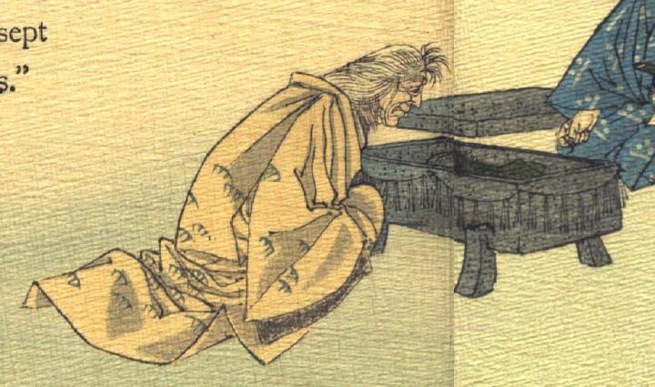

旅装束の老婆。鬼が化けた姿である。白髪を長く伸ばし、松のような模様が入った打掛をまとっている。座敷に座り、足のついた石の箱に入った鬼の片腕を見つめている。石の箱の側面には注連縄が巡らされており、蓋は奥に置かれている。
著作者：J.Dautremer／出典：親書誌：U426_nichibunken_0121：Le bras de l'ogre／日付：2003／資源識別子：U426_nichibunken_0121_0004_0000
Copyright (c)2010- International Research Center for Japanese Studies, Kyoto, Japan. All rights reserved.